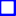

<!doctype html>
<html lang="en">
    <head>
        <meta charset="utf-8">
        <meta http-equiv="X-UA-Compatible" content="IE=edge">
        <meta name="viewport" content="initial-scale=1,user-scalable=no,maximum-scale=1,width=device-width">
        <meta name="mobile-web-app-capable" content="yes">
        <meta name="apple-mobile-web-app-capable" content="yes">
        <link rel="stylesheet" href="css/leaflet.css">
        <link rel="stylesheet" href="css/L.Control.Layers.Tree.css">
        <link rel="stylesheet" href="css/qgis2web.css">
        <link rel="stylesheet" href="css/fontawesome-all.min.css">
        <link rel="stylesheet" href="css/leaflet-search.css">
        <link rel="stylesheet" href="css/leaflet-control-geocoder.Geocoder.css">
        <link rel="stylesheet" href="css/leaflet-measure.css">
        <style>
        html, body, #map {
            width: 100%;
            height: 100%;
            padding: 0;
            margin: 0;
        }
        </style>
        <title></title>
    </head>
    <body>
        <div id="map">
        </div>
        <script src="js/qgis2web_expressions.js"></script>
        <script src="js/leaflet.js"></script>
        <script src="js/L.Control.Layers.Tree.min.js"></script>
        <script src="js/leaflet.rotatedMarker.js"></script>
        <script src="js/leaflet.pattern.js"></script>
        <script src="js/leaflet-hash.js"></script>
        <script src="js/Autolinker.min.js"></script>
        <script src="js/rbush.min.js"></script>
        <script src="js/labelgun.min.js"></script>
        <script src="js/labels.js"></script>
        <script src="js/leaflet-control-geocoder.Geocoder.js"></script>
        <script src="js/leaflet-measure.js"></script>
        <script src="js/proj4.js"></script>
        <script src="js/proj4leaflet.js"></script>
        <script src="js/leaflet-search.js"></script>
        <script src="data/VNM_2.js"></script>
        <script src="data/LDmap_3.js"></script>
        <script src="data/DiLinhGridmap_4.js"></script>
        <script src="data/DilinhLocal_5.js"></script>
        <script src="data/SMSCodeFarmerList_6.js"></script>
        <script>
        var crs = new L.Proj.CRS('EPSG:5899', '+proj=tmerc +lat_0=0 +lon_0=107.75 +k=0.9999 +x_0=500000 +y_0=0 +ellps=WGS84 +towgs84=-191.90441429,-39.30318279,-111.45032835,0.00928836,-0.01975479,0.00427372,0.252906278 +units=m +no_defs', {
            resolutions: [2800, 1400, 700, 350, 175, 84, 42, 21, 11.2, 5.6, 2.8, 1.4, 0.7, 0.35, 0.14, 0.07],
        });
        var map = L.map('map', {
            crs: crs,
            continuousWorld: false,
            worldCopyJump: false, 
            zoomControl:false, maxZoom:28, minZoom:1
        }).fitBounds([[11.029924395313103,107.59355276996696],[11.840658986877767,108.72529941216256]]);
        var hash = new L.Hash(map);
        map.attributionControl.setPrefix('<a href="https://github.com/tomchadwin/qgis2web" target="_blank">qgis2web</a> &middot; <a href="https://leafletjs.com" title="A JS library for interactive maps">Leaflet</a> &middot; <a href="https://qgis.org">QGIS</a>');
        var autolinker = new Autolinker({truncate: {length: 30, location: 'smart'}});
        // remove popup's row if "visible-with-data"
        function removeEmptyRowsFromPopupContent(content, feature) {
         var tempDiv = document.createElement('div');
         tempDiv.innerHTML = content;
         var rows = tempDiv.querySelectorAll('tr');
         for (var i = 0; i < rows.length; i++) {
             var td = rows[i].querySelector('td.visible-with-data');
             var key = td ? td.id : '';
             if (td && td.classList.contains('visible-with-data') && feature.properties[key] == null) {
                 rows[i].parentNode.removeChild(rows[i]);
             }
         }
         return tempDiv.innerHTML;
        }
        // add class to format popup if it contains media
		function addClassToPopupIfMedia(content, popup) {
			var tempDiv = document.createElement('div');
			tempDiv.innerHTML = content;
			if (tempDiv.querySelector('td img')) {
				popup._contentNode.classList.add('media');
					// Delay to force the redraw
					setTimeout(function() {
						popup.update();
					}, 10);
			} else {
				popup._contentNode.classList.remove('media');
			}
		}
        var zoomControl = L.control.zoom({
            position: 'topleft'
        }).addTo(map);
        var measureControl = new L.Control.Measure({
            position: 'topleft',
            primaryLengthUnit: 'meters',
            secondaryLengthUnit: 'kilometers',
            primaryAreaUnit: 'sqmeters',
            secondaryAreaUnit: 'hectares'
        });
        measureControl.addTo(map);
        document.getElementsByClassName('leaflet-control-measure-toggle')[0].innerHTML = '';
        document.getElementsByClassName('leaflet-control-measure-toggle')[0].className += ' fas fa-ruler';
        var bounds_group = new L.featureGroup([]);
        function setBounds() {
        }
        map.createPane('pane_OSMStandard_0');
        map.getPane('pane_OSMStandard_0').style.zIndex = 400;
        var layer_OSMStandard_0 = L.tileLayer('http://tile.openstreetmap.org/{z}/{x}/{y}.png', {
            pane: 'pane_OSMStandard_0',
            opacity: 1.0,
            attribution: '<a href="https://www.openstreetmap.org/copyright">© OpenStreetMap contributors, CC-BY-SA</a>',
            minZoom: 1,
            maxZoom: 28,
            minNativeZoom: 0,
            maxNativeZoom: 19
        });
        layer_OSMStandard_0;
        map.addLayer(layer_OSMStandard_0);
        map.createPane('pane_GoogleSatellite_1');
        map.getPane('pane_GoogleSatellite_1').style.zIndex = 401;
        var layer_GoogleSatellite_1 = L.tileLayer('https://mt1.google.com/vt/lyrs=s&x={x}&y={y}&z={z}', {
            pane: 'pane_GoogleSatellite_1',
            opacity: 1.0,
            attribution: '',
            minZoom: 1,
            maxZoom: 28,
        });
        layer_GoogleSatellite_1;
        map.addLayer(layer_GoogleSatellite_1);
        function pop_VNM_2(feature, layer) {
            var popupContent = '<table>\
                    <tr>\
                        <td colspan="2">' + (feature.properties['NAME_0'] !== null ? autolinker.link(feature.properties['NAME_0'].toLocaleString()) : '') + '</td>\
                    </tr>\
                </table>';
            var content = removeEmptyRowsFromPopupContent(popupContent, feature);
			layer.on('popupopen', function(e) {
				addClassToPopupIfMedia(content, e.popup);
			});
			layer.bindPopup(content, { maxHeight: 400 });
        }

        function style_VNM_2_0() {
            return {
                pane: 'pane_VNM_2',
                opacity: 1,
                color: 'rgba(0,0,255,1.0)',
                dashArray: '',
                lineCap: 'square',
                lineJoin: 'bevel',
                weight: 3.0,
                fillOpacity: 0,
                interactive: true,
            }
        }
        map.createPane('pane_VNM_2');
        map.getPane('pane_VNM_2').style.zIndex = 402;
        map.getPane('pane_VNM_2').style['mix-blend-mode'] = 'normal';
        var layer_VNM_2 = new L.geoJson(json_VNM_2, {
            attribution: '',
            interactive: true,
            dataVar: 'json_VNM_2',
            layerName: 'layer_VNM_2',
            pane: 'pane_VNM_2',
            onEachFeature: pop_VNM_2,
            style: style_VNM_2_0,
        });
        bounds_group.addLayer(layer_VNM_2);
        map.addLayer(layer_VNM_2);
        function pop_LDmap_3(feature, layer) {
            var popupContent = '<table>\
                    <tr>\
                        <td colspan="2">' + (feature.properties['fid'] !== null ? autolinker.link(feature.properties['fid'].toLocaleString()) : '') + '</td>\
                    </tr>\
                    <tr>\
                        <th scope="row">LDM_adm</th>\
                        <td>' + (feature.properties['LDM_adm'] !== null ? autolinker.link(feature.properties['LDM_adm'].toLocaleString()) : '') + '</td>\
                    </tr>\
                </table>';
            var content = removeEmptyRowsFromPopupContent(popupContent, feature);
			layer.on('popupopen', function(e) {
				addClassToPopupIfMedia(content, e.popup);
			});
			layer.bindPopup(content, { maxHeight: 400 });
        }

        function style_LDmap_3_0() {
            return {
                pane: 'pane_LDmap_3',
                opacity: 1,
                color: 'rgba(51,160,44,1.0)',
                dashArray: '',
                lineCap: 'square',
                lineJoin: 'bevel',
                weight: 2.0,
                fillOpacity: 0,
                interactive: true,
            }
        }
        map.createPane('pane_LDmap_3');
        map.getPane('pane_LDmap_3').style.zIndex = 403;
        map.getPane('pane_LDmap_3').style['mix-blend-mode'] = 'normal';
        var layer_LDmap_3 = new L.geoJson(json_LDmap_3, {
            attribution: '',
            interactive: true,
            dataVar: 'json_LDmap_3',
            layerName: 'layer_LDmap_3',
            pane: 'pane_LDmap_3',
            onEachFeature: pop_LDmap_3,
            style: style_LDmap_3_0,
        });
        bounds_group.addLayer(layer_LDmap_3);
        map.addLayer(layer_LDmap_3);
        function pop_DiLinhGridmap_4(feature, layer) {
            var popupContent = '<table>\
                    <tr>\
                        <th scope="row">fid</th>\
                        <td>' + (feature.properties['fid'] !== null ? autolinker.link(feature.properties['fid'].toLocaleString()) : '') + '</td>\
                    </tr>\
                </table>';
            var content = removeEmptyRowsFromPopupContent(popupContent, feature);
			layer.on('popupopen', function(e) {
				addClassToPopupIfMedia(content, e.popup);
			});
			layer.bindPopup(content, { maxHeight: 400 });
        }

        function style_DiLinhGridmap_4_0() {
            return {
                pane: 'pane_DiLinhGridmap_4',
                opacity: 1,
                color: 'rgba(35,35,35,1.0)',
                dashArray: '',
                lineCap: 'square',
                lineJoin: 'bevel',
                weight: 2.0,
                fillOpacity: 0,
                interactive: true,
            }
        }
        map.createPane('pane_DiLinhGridmap_4');
        map.getPane('pane_DiLinhGridmap_4').style.zIndex = 404;
        map.getPane('pane_DiLinhGridmap_4').style['mix-blend-mode'] = 'normal';
        var layer_DiLinhGridmap_4 = new L.geoJson(json_DiLinhGridmap_4, {
            attribution: '',
            interactive: true,
            dataVar: 'json_DiLinhGridmap_4',
            layerName: 'layer_DiLinhGridmap_4',
            pane: 'pane_DiLinhGridmap_4',
            onEachFeature: pop_DiLinhGridmap_4,
            style: style_DiLinhGridmap_4_0,
        });
        bounds_group.addLayer(layer_DiLinhGridmap_4);
        map.addLayer(layer_DiLinhGridmap_4);
        function pop_DilinhLocal_5(feature, layer) {
            var popupContent = '<table>\
                    <tr>\
                        <th scope="row">NAME_2</th>\
                        <td>' + (feature.properties['NAME_2'] !== null ? autolinker.link(feature.properties['NAME_2'].toLocaleString()) : '') + '</td>\
                    </tr>\
                    <tr>\
                        <th scope="row">comon view at Di Linh</th>\
                        <td>' + (feature.properties['Emage'] !== null ? '' : '') + '</td>\
                    </tr>\
                </table>';
            var content = removeEmptyRowsFromPopupContent(popupContent, feature);
			layer.on('popupopen', function(e) {
				addClassToPopupIfMedia(content, e.popup);
			});
			layer.bindPopup(content, { maxHeight: 400 });
        }

        function style_DilinhLocal_5_0() {
            return {
                pane: 'pane_DilinhLocal_5',
                opacity: 1,
                color: 'rgba(35,35,35,1.0)',
                dashArray: '',
                lineCap: 'butt',
                lineJoin: 'miter',
                weight: 1.0, 
                fill: true,
                fillOpacity: 1,
                fillColor: 'rgba(243,166,178,1.0)',
                interactive: true,
            }
        }
        map.createPane('pane_DilinhLocal_5');
        map.getPane('pane_DilinhLocal_5').style.zIndex = 405;
        map.getPane('pane_DilinhLocal_5').style['mix-blend-mode'] = 'normal';
        var layer_DilinhLocal_5 = new L.geoJson(json_DilinhLocal_5, {
            attribution: '',
            interactive: true,
            dataVar: 'json_DilinhLocal_5',
            layerName: 'layer_DilinhLocal_5',
            pane: 'pane_DilinhLocal_5',
            onEachFeature: pop_DilinhLocal_5,
            style: style_DilinhLocal_5_0,
        });
        bounds_group.addLayer(layer_DilinhLocal_5);
        map.addLayer(layer_DilinhLocal_5);
        function pop_SMSCodeFarmerList_6(feature, layer) {
            var popupContent = '<table>\
                    <tr>\
                        <th scope="row">National I</th>\
                        <td>' + (feature.properties['National I'] !== null ? autolinker.link(feature.properties['National I'].toLocaleString()) : '') + '</td>\
                    </tr>\
                    <tr>\
                        <th scope="row">FarmID</th>\
                        <td>' + (feature.properties['FarmID'] !== null ? autolinker.link(feature.properties['FarmID'].toLocaleString()) : '') + '</td>\
                    </tr>\
                    <tr>\
                        <th scope="row">Area(ha)</th>\
                        <td>' + (feature.properties['Area(ha)'] !== null ? autolinker.link(feature.properties['Area(ha)'].toLocaleString()) : '') + '</td>\
                    </tr>\
                    <tr>\
                        <th scope="row">Yield(mt)</th>\
                        <td>' + (feature.properties['Yield(mt)'] !== null ? autolinker.link(feature.properties['Yield(mt)'].toLocaleString()) : '') + '</td>\
                    </tr>\
                    <tr>\
                        <th scope="row">Latitude</th>\
                        <td>' + (feature.properties['Latitude'] !== null ? autolinker.link(feature.properties['Latitude'].toLocaleString()) : '') + '</td>\
                    </tr>\
                    <tr>\
                        <th scope="row">Longtitude</th>\
                        <td>' + (feature.properties['Longtitude'] !== null ? autolinker.link(feature.properties['Longtitude'].toLocaleString()) : '') + '</td>\
                    </tr>\
                    <tr>\
                        <th scope="row">Certified</th>\
                        <td>' + (feature.properties['Certified'] !== null ? autolinker.link(feature.properties['Certified'].toLocaleString()) : '') + '</td>\
                    </tr>\
                    <tr>\
                        <th scope="row">Full name</th>\
                        <td>' + (feature.properties['Full name'] !== null ? autolinker.link(feature.properties['Full name'].toLocaleString()) : '') + '</td>\
                    </tr>\
                    <tr>\
                        <th scope="row">Gender</th>\
                        <td>' + (feature.properties['Gender'] !== null ? autolinker.link(feature.properties['Gender'].toLocaleString()) : '') + '</td>\
                    </tr>\
                    <tr>\
                        <th scope="row">Age</th>\
                        <td>' + (feature.properties['Age'] !== null ? autolinker.link(feature.properties['Age'].toLocaleString()) : '') + '</td>\
                    </tr>\
                    <tr>\
                        <th scope="row">Province</th>\
                        <td>' + (feature.properties['Province'] !== null ? autolinker.link(feature.properties['Province'].toLocaleString()) : '') + '</td>\
                    </tr>\
                    <tr>\
                        <th scope="row">Address</th>\
                        <td>' + (feature.properties['Address'] !== null ? autolinker.link(feature.properties['Address'].toLocaleString()) : '') + '</td>\
                    </tr>\
                    <tr>\
                        <th scope="row">Tel.</th>\
                        <td>' + (feature.properties['Tel.'] !== null ? autolinker.link(feature.properties['Tel.'].toLocaleString()) : '') + '</td>\
                    </tr>\
                    <tr>\
                        <th scope="row">Status</th>\
                        <td>' + (feature.properties['Status'] !== null ? autolinker.link(feature.properties['Status'].toLocaleString()) : '') + '</td>\
                    </tr>\
                </table>';
            var content = removeEmptyRowsFromPopupContent(popupContent, feature);
			layer.on('popupopen', function(e) {
				addClassToPopupIfMedia(content, e.popup);
			});
			layer.bindPopup(content, { maxHeight: 400 });
        }

        function style_SMSCodeFarmerList_6_0() {
            return {
                pane: 'pane_SMSCodeFarmerList_6',
                radius: 4.0,
                opacity: 1,
                color: 'rgba(35,35,35,1.0)',
                dashArray: '',
                lineCap: 'butt',
                lineJoin: 'miter',
                weight: 1,
                fill: true,
                fillOpacity: 1,
                fillColor: 'rgba(246,41,41,1.0)',
                interactive: true,
            }
        }
        map.createPane('pane_SMSCodeFarmerList_6');
        map.getPane('pane_SMSCodeFarmerList_6').style.zIndex = 406;
        map.getPane('pane_SMSCodeFarmerList_6').style['mix-blend-mode'] = 'normal';
        var layer_SMSCodeFarmerList_6 = new L.geoJson(json_SMSCodeFarmerList_6, {
            attribution: '',
            interactive: true,
            dataVar: 'json_SMSCodeFarmerList_6',
            layerName: 'layer_SMSCodeFarmerList_6',
            pane: 'pane_SMSCodeFarmerList_6',
            onEachFeature: pop_SMSCodeFarmerList_6,
            pointToLayer: function (feature, latlng) {
                var context = {
                    feature: feature,
                    variables: {}
                };
                return L.circleMarker(latlng, style_SMSCodeFarmerList_6_0(feature));
            },
        });
        bounds_group.addLayer(layer_SMSCodeFarmerList_6);
        map.addLayer(layer_SMSCodeFarmerList_6);
        var osmGeocoder = new L.Control.Geocoder({
            collapsed: true,
            position: 'topleft',
            text: 'Search',
            title: 'Testing'
        }).addTo(map);
        document.getElementsByClassName('leaflet-control-geocoder-icon')[0]
        .className += ' fa fa-search';
        document.getElementsByClassName('leaflet-control-geocoder-icon')[0]
        .title += 'Search for a place';
        var baseMaps = {};
        var overlaysTree = [
        {label: '<b>InfraStructure Maps</b>', selectAllCheckbox: true, children: [
            {label: ' SMS Code FarmerList', layer: layer_SMSCodeFarmerList_6},
            {label: ' Dilinh@Local', layer: layer_DilinhLocal_5},
            {label: ' DiLinh@Gridmap', layer: layer_DiLinhGridmap_4},
            {label: ' LD@map', layer: layer_LDmap_3},
            {label: ' VNM', layer: layer_VNM_2},]},
            {label: "Google Satellite", layer: layer_GoogleSatellite_1},
            {label: "OSM Standard", layer: layer_OSMStandard_0},]
        var lay = L.control.layers.tree(null, overlaysTree,{
            //namedToggle: true,
            //selectorBack: false,
            //closedSymbol: '&#8862; &#x1f5c0;',
            //openedSymbol: '&#8863; &#x1f5c1;',
            //collapseAll: 'Collapse all',
            //expandAll: 'Expand all',
            collapsed: true,
        });
        lay.addTo(map);
        setBounds();
        var i = 0;
        layer_VNM_2.eachLayer(function(layer) {
            var context = {
                feature: layer.feature,
                variables: {}
            };
            layer.bindTooltip((layer.feature.properties['NAME_0'] !== null?String('<div style="color: #ffffff; font-size: 30pt; font-family: \'Open Sans\', sans-serif;">' + layer.feature.properties['NAME_0']) + '</div>':''), {permanent: true, offset: [-0, -16], className: 'css_VNM_2'});
            labels.push(layer);
            totalMarkers += 1;
              layer.added = true;
              addLabel(layer, i);
              i++;
        });
        var i = 0;
        layer_LDmap_3.eachLayer(function(layer) {
            var context = {
                feature: layer.feature,
                variables: {}
            };
            layer.bindTooltip((layer.feature.properties['LDM_adm'] !== null?String('<div style="color: #1f78b4; font-size: 25pt; font-family: \'Open Sans\', sans-serif;">' + layer.feature.properties['LDM_adm']) + '</div>':''), {permanent: true, offset: [-0, -16], className: 'css_LDmap_3'});
            labels.push(layer);
            totalMarkers += 1;
              layer.added = true;
              addLabel(layer, i);
              i++;
        });
        var i = 0;
        layer_DiLinhGridmap_4.eachLayer(function(layer) {
            var context = {
                feature: layer.feature,
                variables: {}
            };
            layer.bindTooltip((layer.feature.properties['fid'] !== null?String('<div style="color: #ffff10; font-size: 10pt; font-family: \'Open Sans\', sans-serif;">' + layer.feature.properties['fid']) + '</div>':''), {permanent: true, offset: [-0, -16], className: 'css_DiLinhGridmap_4'});
            labels.push(layer);
            totalMarkers += 1;
              layer.added = true;
              addLabel(layer, i);
              i++;
        });
        var i = 0;
        layer_DilinhLocal_5.eachLayer(function(layer) {
            var context = {
                feature: layer.feature,
                variables: {}
            };
            layer.bindTooltip((layer.feature.properties['NAME_2'] !== null?String('<div style="color: #ffffff; font-size: 15pt; font-family: \'Open Sans\', sans-serif;">' + layer.feature.properties['NAME_2']) + '</div>':''), {permanent: true, offset: [-0, -16], className: 'css_DilinhLocal_5'});
            labels.push(layer);
            totalMarkers += 1;
              layer.added = true;
              addLabel(layer, i);
              i++;
        });
        var i = 0;
        layer_SMSCodeFarmerList_6.eachLayer(function(layer) {
            var context = {
                feature: layer.feature,
                variables: {}
            };
            layer.bindTooltip((layer.feature.properties['FarmID'] !== null?String('<div style="color: #ffffff; font-size: 10pt; font-family: \'Open Sans\', sans-serif;">' + layer.feature.properties['FarmID']) + '</div>':''), {permanent: true, offset: [-0, -16], className: 'css_SMSCodeFarmerList_6'});
            labels.push(layer);
            totalMarkers += 1;
              layer.added = true;
              addLabel(layer, i);
              i++;
        });
        map.addControl(new L.Control.Search({
            layer: layer_SMSCodeFarmerList_6,
            initial: false,
            hideMarkerOnCollapse: true,
            propertyName: 'FarmID'}));
        document.getElementsByClassName('search-button')[0].className +=
         ' fa fa-binoculars';
        resetLabels([layer_VNM_2,layer_LDmap_3,layer_DiLinhGridmap_4,layer_DilinhLocal_5,layer_SMSCodeFarmerList_6]);
        map.on("zoomend", function(){
            resetLabels([layer_VNM_2,layer_LDmap_3,layer_DiLinhGridmap_4,layer_DilinhLocal_5,layer_SMSCodeFarmerList_6]);
        });
        map.on("layeradd", function(){
            resetLabels([layer_VNM_2,layer_LDmap_3,layer_DiLinhGridmap_4,layer_DilinhLocal_5,layer_SMSCodeFarmerList_6]);
        });
        map.on("layerremove", function(){
            resetLabels([layer_VNM_2,layer_LDmap_3,layer_DiLinhGridmap_4,layer_DilinhLocal_5,layer_SMSCodeFarmerList_6]);
        });
        </script>
    </body>
</html>
